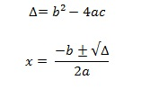

História sobre Delta
Aprendemos na escola que essa fórmula foi desenvolvida por Bhaskara (1114-1185). Porém o que muitos professores deixam de comentar é que a formula de Bhaskara não foi desenvolvida por ele, já que o mesmo afirma que a formula, já era mencionada em um manuscrito hindu do século XI, e que foi encontrado por um matemático de nome Sridhara.
Mas calma, antes de falarmos como utilizar a formula vamos mostrar que Bhaskara não leva o titulo de grande matemático por nada, pois ele pode não ter desenvolvido a formula de bhaskara, mas o mesmo colaborou significativamente com trabalhos sobre aritmética (Lilavati), álgebra com o Bijaganita e como astrônomo colaborou com o Grahaganita que são estudos sobre a matemática envolvida na movimentação dos corpos celestes.
Agora que já falamos de historia vamos para a aplicação:
Não é segredo para ninguém que a formula de bhaskara é utilizada para resolver equações de segundo grau, e ela e expressa da seguinte maneira:
bhaskara
Onde:
x: É a variável (também conhecida como incógnita)
a: Coeficiente quadrático
b: Coeficiente linear
c: Coeficiente constante
Equação de segundo grau ou segunda ordem:
As equações de grau dois determinam os valores de uma equação polinomial de grau 2.
Essas equações são representadas pela expressão:
equação 2 grau
Neste caso a,b e c são números reais sendo a igual a 0, exemplo:
eq dois
Onde:
a: 2
b: 3
c: 5
Observe que se o numero correspondente a “a” for zero, o que teremos é uma equação de primeiro grau:
ax+b.
O discriminante de uma equação é expressa pela letra grega delta certo (Delta), faz parte da formula de Bhaskara, sendo a raiz expressa na formula.
LEMBRETE: A raiz deve ser solucionada antes de inserir os valores na formula.
